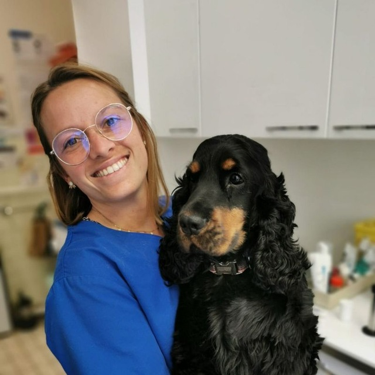
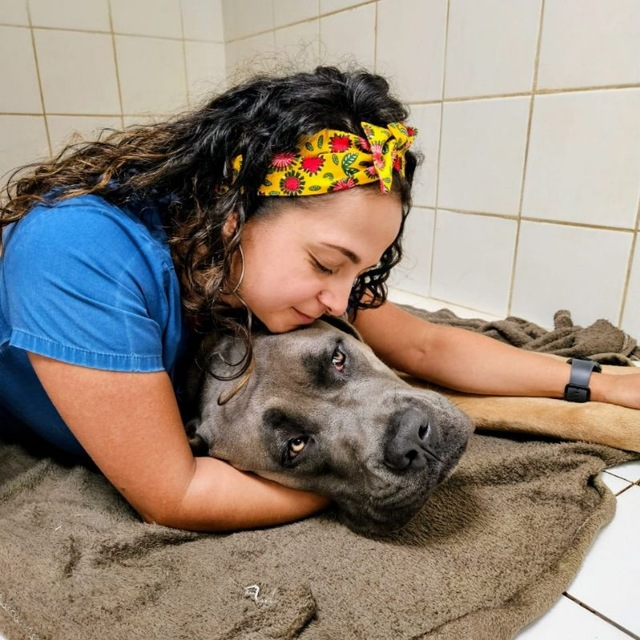

Recruteurs vétérinaires
Les échanges sont conduits par des vétérinaires exerçant ou ayant exercé en clinique. Cela change le brief, la crédibilité et la lecture des enjeux médicaux.
SaRecrute est un cabinet exclusivement composé de vétérinaires exerçant ou ayant exercé en clinique. Concrètement, nous parlons le même langage que vos candidats, nous cadrons le poste avec vous sans jargon, et nous savons ce qui décide un vétérinaire à rejoindre une clinique.
Recrutement de vétérinaires · Accompagnement à la cession de clinique.
SaRecrute prend connaissance des atouts et des difficultés de la structure, et l'accompagne dans l'optimisation de ses besoins humains.
Les échanges sont conduits par des vétérinaires exerçant ou ayant exercé en clinique. Cela change le brief, la crédibilité et la lecture des enjeux médicaux.
Cadrage, analyse marché, rédaction d'offre, diffusion, approche directe, préqualification, suivi des entretiens et intégration.
Identification proactive des profils qui ne sont pas en recherche active mais qui correspondent au poste et au projet de la clinique.
Nous présentons le poste clairement, sans le survendre : projet médical, équipe, matériel, perspectives et conditions de travail.
Accompagnement des candidats sur les questions d'équivalence de diplôme, de logement et d'installation dans un nouveau pays.
Évaluation précise du niveau réel : pratiques maîtrisées, autonomie, gestes chirurgicaux, gestion des urgences, posture en équipe.
Confier votre recrutement à des vétérinaires change concrètement la façon dont on parle à vos candidats.
Tri, échanges et préqualification sont assurés par le cabinet. Vous voyez uniquement les candidats pertinents.
Un vivier construit sur la durée, avec des candidats suivis sur plusieurs années dans leur trajectoire.
Les questions cliniques sont traitées entre confrères : cela rassure et révèle ce qu'un recruteur généraliste ne voit pas.
Plateau technique, charge d'urgences, gardes, logiciel métier : nous parlons votre langue avant de proposer un candidat.
SaRecrute s'appuie sur des recruteuses qui connaissent la réalité de la clinique. Cette expérience rend les échanges plus précis avec les clients comme avec les candidats.

Spécialisée dans l'accompagnement des cliniques et des candidats vétérinaires sur les marchés français et suisse. Son expérience clinique lui permet de comprendre les besoins médicaux, humains et organisationnels des structures.

Spécialisée dans les recrutements vétérinaires sur les marchés français, belge et espagnol. Sa connaissance du terrain facilite l'analyse des attentes candidats, de la mobilité et des spécificités locales.
SaRecrute accompagne tous les niveaux d'expérience, sur tous les types de structure.
0-2 ans d'expérience, en recherche d'un cadre formateur.
2-7 ans, autonome, à la recherche d'un projet clair.
7 ans et plus, expertise médicale et posture managériale.
Diplôme européen ou résidence, pratique référée.
Profils en formation, mobilité possible vers la spécialité.
Tous types de structures et d'orientation médicale, de la clinique de proximité aux établissements à plateau technique élargi.
Profils référés et expertises pointues, pour les cliniques qui développent un pôle de spécialité ou une activité d'urgence.
Quatre étapes structurées, du brief jusqu'à l'intégration du candidat.
Connaissance des équipes, des pratiques et des compétences, de la structure, du matériel et de l'organisation, pour calibrer le profil recherché en conséquence.
Rédaction d'offre, diffusion multi-canaux, présentation claire du projet de la clinique pour attirer les bons candidats.
Approche directe et activation du vivier, puis qualification clinique en profondeur menée entre confrères, de vétérinaire à vétérinaire. Nous ne présentons que les candidats réellement pertinents.
Points réguliers avec la clinique et le candidat pendant la période d'essai : nous restons présents jusqu'à l'intégration effective, pas seulement jusqu'à la signature.
Un recrutement engage la clinique comme le candidat sur la durée. Voici ce sur quoi nous nous engageons, concrètement.
Nos honoraires ne sont dus qu'en cas de recrutement finalisé, à la prise de poste effective du candidat.
Nous ne démarchons jamais les vétérinaires que nous avons placés dans les cliniques que nous accompagnons.
Toutes les informations échangées, côté clinique comme côté candidat, restent strictement confidentielles.
Vous savez toujours où en est votre recrutement : points réguliers et visibilité complète sur l'avancement.
Une approche structurée permet de lancer rapidement la recherche, d'activer plusieurs canaux et de sécuriser l'intégration.
En moyenne pour présenter une première candidature qualifiée après le lancement de la mission.
Des candidats recrutés ont passé leur période d'essai.
Délai moyen pour la signature de la promesse d'embauche après lancement de la mission.
Candidats en recherche active ou passive dans notre vivier.
Données moyennes observées sur les missions menées en 2025.
Échangeons sur votre besoin : type de profil, pratique recherchée, marché ciblé, niveau d'urgence et arguments à mettre en avant.
Écrire à SaRecrute →